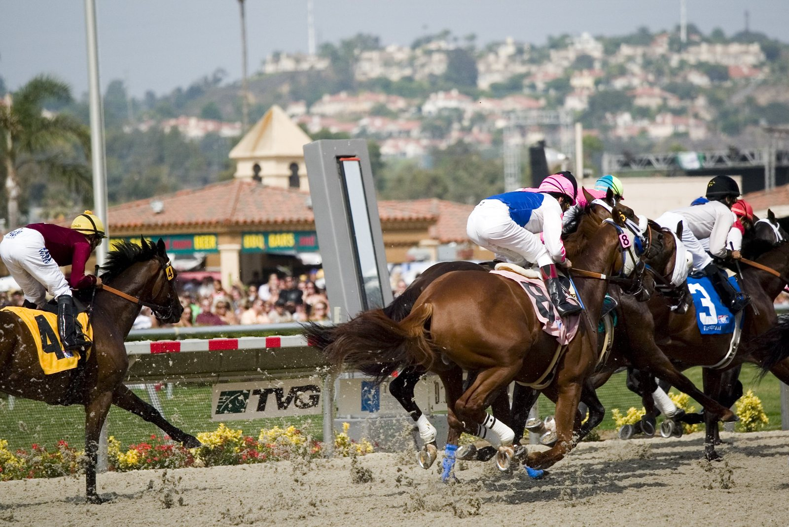

Cheltenham cancela el Glenfarclas Cross Country Chase de noviembre por el terreno firme
La prueba de campo a través, prevista para el 13 de noviembre, se traslada al Festival Trials Day del 30 de enero tras un verano excepcionalmente seco que ha dejado el recorrido impracticable.

CC BY 2.0
El hipódromo de Cheltenham anunció este viernes la suspensión del Glenfarclas Cross Country Chase en The November Meeting. El terreno del circuito de cross country está firme y, en su estado actual, no permite correr.
El origen del problema está en un verano excepcionalmente seco y en unas temperaturas impropias de la estación. El recorrido de cross country no ha podido regarse porque los recursos se han concentrado en preparar el Old Course, donde se disputará The Showcase los días 23 y 24 de octubre. Las previsiones apuntan a que la sequía continuará y a que no lloverá lo suficiente para que el trazado esté en condiciones seguras antes de la reunión de noviembre.
La carrera se reprogramará para el Festival Trials Day del sábado 30 de enero, que pasará a tener ocho carreras. El hueco del viernes 13 de noviembre se cubrirá con una prueba sustitutiva. El hipódromo la decidirá antes del viernes 30 de octubre, junto con la BHA, la autoridad hípica británica, y la NTF, la federación nacional de entrenadores, y en función de cómo evolucione la sequía.
Jon Pullin, clerk of the course de Cheltenham, lamentó la pérdida: «Siempre es decepcionante perder una carrera o una jornada, y el equipo ha trabajado muchísimo en condiciones muy difíciles para tener listo el Old Course para la próxima semana».
Pullin explicó que la prioridad ha tenido que ser el Old Course: «Dado el verano excepcionalmente seco, que se ha prolongado hasta el inicio del otoño, nuestra prioridad ha sido garantizar que el Old Course esté preparado. Las previsiones indican que se esperan pocas lluvias en las próximas semanas y que las temperaturas seguirán siendo cálidas, por lo que nuestra atención deberá seguir centrada en el Old Course de cara a The November Meeting».
El responsable del trazado añadió que la decisión se adelantó todo lo posible «para que los participantes tengan tiempo de ajustar sus planes». También vinculó la elección de la carrera sustitutiva con la situación general del calendario: «Por desgracia, ya se han perdido varias jornadas en todo el país por las difíciles condiciones. En conversaciones con la BHA y la NTF, reconocemos que esto podría continuar durante las próximas semanas. Por tanto, puede haber carreras que necesiten reprogramarse y que podrían acomodarse en The November Meeting, así que confirmaremos la carrera sustitutiva antes del viernes 30 de octubre»
Por Martín Larrañeta